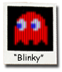
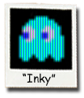

第４章：ゴーストとの戦い
まずモンスターを誘導する方法を学ぶ必要があります。レッド、ピンク、シアンがどのようにグルーピングされるのか見てみましょう。４体より２体のモンスターをコントロールする方が簡単です。
Chris Ayra；最優秀プレイヤー
前章ではゴーストがターゲットタイルを追跡して、どのように迷路を進むのか学びました。次にアカベエ、ピンキー、アオスケおよびグズタを詳しく観察して、追跡モードの各行動がなぜあれほど異なるのか理解を深めます。彼らはターゲットタイルの追跡において同様の経路探索ロジックを共有しています。それではパックマンを追うとなぜそれぞれの行動が異なるのでしょうか？
答えはとても簡単です： パックマンのタイルが常にターゲットであるとは限りません。すべてのゴーストは追跡モードにおいてターゲットタイルを計算する独自の方法があり、その結果として独自の個性が発揮されます。あるゴーストはパックマンのタイルをそのままターゲットとして使用しますが、ほかのゴーストは別のタイルを見つけるための中間ステップにしか使わないこともあります。
時にはパックマンとは全く関係のないタイルをゴーストが狙っていることもあります！ それがどこにあろうともパックマンがゴーストの進路を邪魔すればやられてしまいます。
噂によると、岩谷徹と彼のチームがPac-Manを世に送り出すまでには、ゴーストのＡＩルーチンを微調整し、改良するだけで何か月も費やされました。彼らの努力は最終製品に表れています。岩谷のチームは非常に単純なロジックとごく僅かなコードを使用して、複雑な経路探索かのような錯覚を起こさせました。
アカベエ
赤いゴーストは追いかけ（英語版ではBlinkyの愛称で呼ばれshadow【つきまとう】）とキャラづけされています。アカベエはいち早く動きだして、迷路上で常にパックマンを追跡します。彼は４体のなかで群を抜いて攻撃的であり、執拗にパックマンの後方でつきまといます。
追跡モードの標的計略のなかで、アカベエは最もシンプルかつ直接的であり、パックマンのいる現在のタイルをターゲットとします。下記の図では、アカベエのターゲットタイルがパックマンの占有するタイルと同じであることがわかります。この方法によりパックマンを直接ターゲットとする、意志が固く、背後に迫るとなかなか振りきれない粘り強いゴーストが生みだされました。

各レベルが始まると全てのゴーストは同じ速度で移動し始めますが、アカベエは迷路に残っているドットの数に基づいてラウンドごとに２回速度を上げます（パックマンがやられた場合は必ずしもそうではありません——これについては後述します）。アカベエのこの加速状態は“スパート”と呼ばれます（訳注：海外では一般にスパートのことを“Cruise Elroy”と呼びますが、この習慣の由来や意味は誰も知らないようです）。
たとえばレベル１では迷路上の残りドット数が20個になったとき、アカベエはスパートして少なくともパックマンと同じ速さまで加速します。さらに重要なのは、そのレベルに残された縄張期間の行動もこの時点で変更され、通常の固定ターゲットタイルの代わりにパックマンのいる現在のタイルをターゲットにし続けることです（縄張モードに入るとき、または解除されたときには進行方向を反転します）。
これによりスパートするとパックマンを常に追いかけますが、ほかのゴースト３体は通常どおり縄張へ向かいます。さらに残りのドット数が10個になるとスパートは再び速度を上げて、パックマンよりも速く移動するようになります。レベルが進むにつれてアカベエのスパートを発動させる迷路上の残りドット数は段階的に増えていきます。レベルごとに２回発動するスパートのドット数/速度については付録の表A.1を参照してください。
パックマンがやられるとアカベエがスパートを発動するタイミングがより複雑になることがあります。ライフを失うたびにゴーストとパックマンがリセットされ、再開後にオレンジ色のグズタが巣のなかで上下に揺れるのをやめて出口のドアから退出するまでのあいだ、アカベエのスパート能力は一時的に停止されます。
それまでは迷路上の残りドット数にかかわらず、アカベエの速度と縄張の行動は通常のままです。しかし、この一時的な制限が解除されるとアカベエはドットの数に応じて再び行動を変化させるようになります。
ピンキー
ピンクのゴーストは待ちぶせ（英語版ではspeedy【素早い】）とキャラづけされています。日本におけるキャラづけはおそらくピンキーが常にプレイヤーの前に出ようとして、あなたを遮るように予期せぬところから先回りできるように見えるからでしょう。ピンキーは常にアオスケやグズタと同じ速度で移動するのでspeedyはより適切な“待ちぶせ”の翻訳としては不適切といえます。
ピンキーとアカベエはしばしばパックマンを囲い込んで、逃げ場をなくすために連携しているように見えます。追跡モードのピンキーがそのような行動をとるのはパックマンのタイルを直接狙うのではなく、パックマンのタイルから彼の向いてる方向へ４つ離れたオフセットを選択するからです（ひとつの例外を除く）。下図はパックマンの向きに応じてピンキーがターゲットを決定するために使用する４つのオフセットを示しています：
パックマンが：
左向きならピンキーのターゲットは４つ左
右向きならピンキーのターゲットは４つ右
下向きならピンキーのターゲットは４つ下
最後にパックマンが上を向いているとピンキーのターゲットタイルは上へ４タイル、左へ４タイルになります。この興味深い結果は、ピンキーのオフセットを計算するロジックコードの微妙なエラーによるものです。
このコードは他の３つのケースでは適切に機能しますが、パックマンが上を向いているとオーバーフローバグの引き金となり、予想される上へのオフセットと距離が等しい左へのオフセットが誤って追加されます（後述するアオスケのロジックでも同じ問題が発生します）。
Don Hodges氏のサイトにはソースコードや提案された修正など、このバグの徹底的なコードレベルの分析を提供する優れた記事があります： PAC-MAN'S GHOST BEHAVIOUR ANALYZED AND FIXED
ピンキーはその標的計略のおかげで、制御するのが最も簡単なゴーストです。ピンキーが近くにいるばあい、パックマンの向きを変えることで次に進む方向を決めることができます（上記の図）。
あなたがピンキーと緊密に向かい合った場合、ピンキーは可能ならあなたに到達する前に向きを変えます。これはピンキーにじゅうぶん近づくことでターゲットタイルがピンキー自身より後方になるためです。
上記の図では、左へ移動するとよりターゲットから遠ざかるため、ピンキーは交差点で上へ向かいます。古くからある手法として“ヘッドフェイキング”が有名です。プレイヤーがレバーを前後に振ってパックマンの向きをすばやく前後に動かすと、うまくいけばゴーストがその過程で進路を変える要因になります。
しかし、実は前後の揺れ動きは不要です。ピンキーが次の交差点でどうすべきか、それを決定する直前に折りよくピンキーに向けすばやく反転すればよく、それで追跡から遠ざけることができます。
アオスケ
水色のゴーストは気まぐれ（英語版ではInkyという愛称で呼ばれbashful【恥かしがり】）とキャラづけがされています。驚くほど突飛ではありませんが、最も予測しにくいゴーストです。
時にはアカベエのようにパックマンを積極的に追いかけ、時にはピンキーのようにパックマンの前に出て立ちはだかり、時にはグズタのようにさまようのです！
実際、アオスケは行動が不安定なので最も危険なゴーストかもしれません。bashful【恥かしがり】は“気まぐれ”のあまり良い翻訳ではなく、アオスケがパックマンに近づくと“避けるのだろう”とプレイヤーに思い込ませますが、常にそうであるとは限りません。

アオスケは追跡モードにおいて、４体いるゴーストのなかで最も複雑な標的計略を使用します。最終的な目標を導き出すためには、パックマンの向きとタイル、さらにアカベエのタイルを必要とします。
アオスケのターゲットを決めるには、まずパックマンの向いてる方向へ２タイル前方にある中間オフセットを設定する必要があります（上の図で緑色のブラケットで囲んだタイル）。
次に、アカベエが現在いるタイルの中心からオフセットタイルの中心までベクトルを描き、オフセットタイルの反対側にも同じだけベクトルを伸ばして長さを２倍にすることを思い描いてください。
この延長されたベクトルが指すタイルが、上述のようにアオスケの実際のターゲットになります。
ピンキーの事例で先に説明したのと同じ理由で、パックマンが上を向いているばあい、アオスケの計算で生成された中間オフセットタイルではオーバーフロー・エラーが発生し、結果として２タイル上および２タイル左のオフセットタイルが生成されます（上の図を参照）。 ほかの３方向（左、右、下)においては、パックマンの向いてる方向の２タイル前方にオフセットされるという、期待どおりの結果が生成されます。
アオスケのターゲット・ロジックは、アカベエがパックマンから遠く離れていればパックマンから遠ざけますが、アカベエが近づくにつれてアオスケのターゲットタイルも近づきます。これはパックマンがアカベエから離れるにつれてアオスケの行動がより変化しやすいように見える理由を説明しています。
ピンキーと同様に、パックマンの方向転換や“ヘッドフェイキング”によって進路がしばしば変更されますが、アオスケにどの程度の影響を及ぼすのかはアカベエがその時点でどこにいるのかに直接関係します。
グズタ
オレンジ色のゴーストはおとぼけ（英語版ではClydeという愛称で呼ばれpokey【のろま】）とキャラづけされています。
実際のグズタはアオスケやピンキーと同じ速度で動くので、彼のキャラ説明は少々誤解を招きます。グズタは巣を離れる最後のゴーストであり、縄張を巡回してないときはパックマンから遠ざかって気ままに行動するので、他のゴーストから離れる傾向があります。
他の３体のゴーストほど危険ではありませんが、彼の行動は時に予測不可能に見えることがあり、やはり脅威であると見なす必要があります。
追跡モードでのグズタは、パックマン（上記では緑色のターゲット）との距離に応じて、ターゲット・ロジックを変更します。まず、グズタ自身のいるタイルとパックマンのいるタイルとのユークリッド距離を計算します。
８タイル以上離れると、アカベエと同様にパックマンを直接ターゲットとします。しかし、８タイルよりも近くなるとグズタは代わりに縄張モードでいつも使用するタイルに切り替えて、パックマンを再びターゲットにするのに十分な距離になるまで自身のコーナーである左下へと向かいます。
上の図ではこの仕組みによってグズタは（パックマンがそこにいる限り）無限ループに陥ります。グズタが破線外のタイルにいるあいだはパックマンをターゲットにしますが、破線領域に入るとグズタは一転して縄張のターゲットに向かうようになります。破線の周囲から離れるとターゲットはパックマンのタイルに戻り、パックマンが他の場所に移動するかモードが変更されるまで、グズタはこの領域を周回し続けます。
グズタの標的計略を理解すれば、彼を回避するのは容易です。覚えておくべきことは、グズタが縄張に戻っているときや、交差点で背を向ける前に邪魔をすれば依然として危険であるということです。